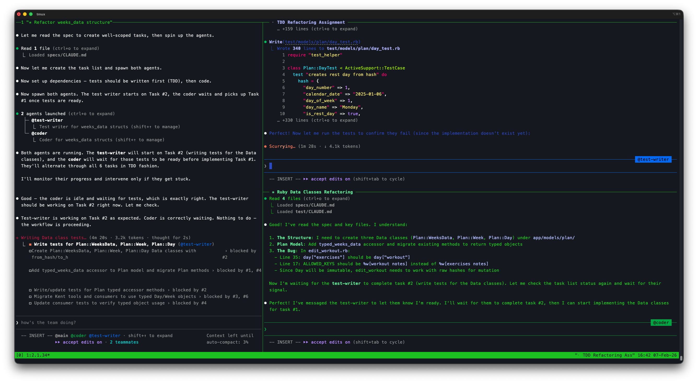

Like a film production — the director doesn't operate the camera, edit footage, AND act.
Each role is specialized. A production pipeline coordinates them.
Approach 1: Agent Teams
Collaborative, conversational
Agents talk to each other — brainstorm, negotiate, share discoveries
Great for exploration and problem-solving
Flexible — agents adapt to what they find in real time
Harder to audit — results depend on conversation flow
Great for debugging — one agent finds a clue, others build on it
Tradeoff: conversations are lossy, hard to audit, don't survive restarts
Best when the problem is fuzzy and agents need to think together
Agent Teams in Action
Two agents collaborating in tmux — test-writer and coder working in TDD fashion

Approach 2: Pipeline Orchestration
Structured, state-machine driven
Conductor monitors and adjusts — agents work on atomic tasks
Tasks released incrementally with quality gates
Reproducible and auditable — same pipeline every time
Debussy takes this approach
Hub-and-Spoke Communication
Agents never talk to each other — only through task state
Tasks are self-contained, communication through signals
Dead simple to debug — survives restarts, fully auditable
Best when the work is well-decomposed and needs quality gates
Complementary, Not Competing
Agent Teams
Exploratory, ill-defined problems
Debugging — need to brainstorm
Infrastructure & environment issues
When the solution isn't clear yet
Pipeline Orchestration
Structured, decomposable work
Needs quality gates & review
Large-scale migrations
When the process matters
In the Camunda migration: Debussy handled 163 structured tasks — but when it was time to start the app and debug docker-compose, agent teams (brainstorming together) solved it faster.
The Key Insight
"Match the communication model
to the nature of the problem."
Fuzzy problem? Let agents talk — brainstorm, explore, converge on a solution. Structured work? Atomic tasks + state machine — predictable, auditable, scalable.
In practice, you use both — often in the same project.
Debussy: Full Architecture
Agent Teams vs. Pipeline: Different Strengths
Aspect
Agent Teams
Debussy Pipeline
Best for
Exploration, debugging, unknowns
Structured, decomposable work
Coordination
Agents chat and brainstorm
State machine + watcher
Flexibility
High — adapts on the fly
Constrained — follows the pipeline
Quality gates
Informal
Mandatory (review, security, acceptance)
Auditability
Hard — depends on conversation
Full — every transition logged
Reproducibility
Low
Same pipeline every time
Real-world use
Docker-compose debugging
163-task Camunda migration
Separation of Roles
Conductor
Creates tasks Monitors progress
Developer
Writes code Writes tests
Reviewer
Reviews quality Can't write code
Security
OWASP audit Can't write code
Integrator
Merges branches Can't change code
Tester
Acceptance tests Can't fix failures
A reviewer that can't write code can only approve or reject — it can't "just fix it," which forces proper feedback loops.
Beads: The Unit of Work
A bead is a small, self-contained task that flows through the pipeline
Has a unique ID (bd-001, bd-002, ...)
Carries status (open, in_progress, closed, blocked)
Convert all .dmn files from Camunda 7 to Camunda 8 format. Update typeRef from integer to number. Verify with unit tests.
stage:developmentsecurity
deps: bd-003, bd-005 • branch: feature/bd-007
Atomic Tasks & The Integrator Singleton
What Makes a Task "Atomic"?
Single responsibility — one bead, one concern
Small & focused — an agent can complete it in one session
Easily testable — clear success criteria in the description
Minimal file overlap — reduces merge conflicts with parallel work
Self-contained — everything the agent needs is in the task
Why Is the Integrator a Singleton?
Merging is inherently sequential — two merges to the same branch at once cause conflicts
Only one integrator runs at a time — serializes merge operations
Prevents race conditions on the feature branch
If a merge fails → bead goes back to development — the integrator never resolves complex conflicts itself
Phased Execution: Stop, Test, Continue
Split large projects into phases — validate before moving on
Batch acceptance testing after each phase — run the full test suite before moving on
Catch integration issues early — don't accumulate 163 beads of untested work
Conductor can re-plan later phases based on what was learned
Failures create fix beads in the current phase, not in the next one
Pipeline as a State Machine
Transitions owned by the watcher, not by agents
Agents signal outcomes — the orchestrator decides what happens next
Prevents agents from skipping steps or self-promoting their own work
The Board: Beads in Motion
Each bead flows through columns — the watcher moves them, agents work them
Backlog
bd-012
Add error handling
bd-013
Update REST client
Development
bd-007 in_progress
Migrate DMN tables
bd-009 in_progress
Convert job workers
Reviewing
bd-005
Spring Boot config
Security
bd-003 security
Auth token handling
Merging
bd-002
Update pom.xml deps
Closed
bd-001 ✓
Setup Zeebe client
bd-004 ✓
Docker-compose v2
The watcher polls this board continuously. When an agent finishes (sets open), the watcher moves the bead to the next column and spawns the next agent.
The Watcher Pattern
Infinite reconciliation loop — like a Kubernetes controller
The watcher is a Python loop that polls bead state every few seconds, decides transitions, and spawns Claude Code agents in tmux windows — each with its own worktree and prompt.
Agent Prompts, Hooks & Skills
Prompt Engineering
Each role has a dedicated prompt builder (Python)
Prompts are dynamically assembled — include bead context, branch info, worktree path
Role constraints are structural: a reviewer's prompt has no write tools
Prompts define exact signal conventions — which status + labels to set
Hooks & Skills
Hooks — shell commands triggered by Claude Code events (pre-commit validation, label guards)